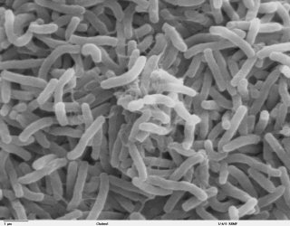

Quando não tratada prontamente e da forma correta, a cólera pode evoluir para quadros mais graves e provocar complicações, como desidratação intensa, levando, inclusive, à morte.
Saber maisA cólera é uma doença bacteriana infecciosa intestinal aguda, transmitida por contaminação fecal-oral direta ou pela ingestão de água ou alimentos contaminados. Frequentemente, a infecção é assintomática ou causa diarreia leve. Pode também se apresentar de forma grave, com diarreia aquosa e profusa, com ou sem vômitos, dor abdominal e cãibras. Quando não tratada prontamente, pode ocorrer desidratação intensa, levando a graves complicações e até mesmo ao óbito. A doença está ligada diretamente ao saneamento básico e à higiene.
O período de incubação da bactéria, tempo que leva para provocar os primeiros sintomas no organismo, varia de algumas horas a 5 dias da infecção. Na maioria dos casos, esse período é de 2 a 3 dias.
O período de transmissibilidade perdura enquanto a pessoa estiver eliminando a bactéria nas fezes, o que ocorre, na maioria dos casos, até poucos dias após a cura. Para fins de vigilância, o período aceito como padrão é de 20 dias.
A transmissão da cólera ocorre por via fecal-oral, ou seja, pela ingestão de água ou alimentos contaminados, ou pela contaminação pessoa a pessoa. Os alimentos, de forma geral, podem ser contaminados durante a cadeia produtiva e durante sua manipulação. Além disso, como o agente causador da cólera faz parte do ambiente aquático, pode se associar a mariscos (crustáceos e moluscos), peixes e algas, entre outros, possibilitando a transmissão da cólera se esses alimentos forem consumidos crus ou mal cozidos.
A cólera é causada pela ação da toxina liberada por dois sorogrupos específicos da bactéria Vibrio cholerae (sorogrupos O1 e O139). A toxina se liga às paredes intestinais, alterando o fluxo normal de sódio e cloreto do organismo. Essa alteração faz com que o corpo secrete grandes quantidades de água, o que provoca diarreia aquosa, desidratação e perda de fluidos e sais minerais importantes para o corpo.
OBSERVAÇÃO: Vibrio cholerae de outros sorogrupos (não O1 e não O139) e dos sorogrupos O1 e O139 que não produzem toxina não causam cólera. Podem causar diarreia, porém menos severa que a cólera e sem potencial epidêmico.
Os principais fatores de risco para a cólera são:
Condições precárias de saneamento básico;
Consumo de água sem tratamento adequado;
Condições precárias de higiene pessoal;
Consumo de alimentos sem higienização ou manipulação adequadas;
Consumo de peixes e mariscos crus ou mal-cozidos.
A maior parte das pessoas infectadas pela cólera não apresenta sintomas e, em muitos casos, nem percebe que contraiu a doença. No entanto, mesmo nesses casos, a pessoa pode transmitir a bactéria e infectar outras pessoas, que podem ter reações distintas.
Os sintomas mais frequentes e comuns da cólera são diarreia e vômitos, com diferentes graus de intensidade, o que acaba sendo confundido com sinais de outras doenças. Também pode ocorrer dor abdominal e, nas formas severas, cãibras, desidratação e choque. Febre não é uma manifestação comum.
Nos casos graves, mais típicos, o início é súbito, com diarreia aquosa, abundante, de difícil controle e com inúmeros episódios diários. Nesses casos, a diarreia e os vômitos determinam uma extraordinária perda de líquidos, que pode ser da ordem de 1 a 2 litros por hora. Tal quadro leva rapidamente à desidratação intensa e deve ser tratado precoce e adequadamente, para evitar a ocorrência de complicações e até mesmo da morte.
• Diarreia.
• Náuseas e vômitos.
A desidratação em decorrência da perda de líquidos pode levar a outros sintomas, como por exemplo:
• Irritabilidade.
• Letargia.
• Olhos encovados.
• Boca seca.
• Sede excessiva.
• Pele seca e enrugada.
• Pouca ou nenhuma produção de urina.
• Pressão arterial baixa.
• Arritmia cardíaca.
• Desequilíbrio eletrolítico (perda de minerais do sangue)
Essa perda de minerais no sangue ainda desencadeia uma série de outros sintomas, como:
• Cãibras musculares.
• Choque.
IMPORTANTE: O choque ocorre quando o volume de sangue baixo provoca queda na pressão arterial e na quantidade de oxigênio, situação que pode levar a pessoa à morte em questão de minutos.
As complicações da cólera são decorrentes do total estado de esgotamento do corpo, causado pela diarreia e pelos vômitos. Essas complicações ocorrem mais frequentemente em pessoas mais vulneráveis, como idosos, diabéticos, desnutridos, portadores do vírus HIV e aquelas pessoas que têm patologia cardíaca prévia.
A desidratação, se não tratada prontamente e da forma adequada, leva à deterioração progressiva da circulação, da função renal e do equilíbrio de água e minerais no corpo, causando dano a todos os sistemas do organismo. Como consequência, podem ocorrer as seguintes complicações:
• choque hipovolêmico (diminuição da quantidade de sangue circulante no corpo);
• necrose renal;
• fraqueza intestinal;
• queda de potássio no sangue, levando a arritmias cardíacas;
• hipoglicemia, com convulsões e coma em crianças.
Em gestantes, o choque hipovolêmico pode induzir a ocorrência de aborto e parto prematuro.
O diagnóstico da cólera é realizado a partir do cultivo de amostras de fezes ou vômito. Quando o Vibrio cholerae é isolado, a bactéria deve ser enviada ao laboratório de referência nacional para realização de análises mais específicas (caracterização bioquímica, sorológica e molecular). Além de permitir a confirmação de casos, a análise laboratorial é importante para avaliar e monitorar as características das bactérias circulantes e a ocorrência de resistência a antimicrobianos.
Diante da suspeita de cólera, deve ser realizado o diagnóstico diferencial considerando-se todos os microrganismos capazes de provocar doenças diarreicas agudas. Recomenda-se, portanto, a coleta simultânea de amostras de fezes para análise viral, bacteriana e parasitológica.
O tratamento eficiente da cólera se fundamenta na rápida reidratação dos pacientes, por meio da administração oral de líquidos e solução de sais de reidratação oral (SRO) ou fluidos endovenosos, dependendo da gravidade do caso.
Em aproximadamente 80% dos casos, os sintomas da cólera são leves ou moderados e devem ser tratados somente por meio da administração oral de líquidos e SRO (planos A e B), ou seja, soro.
Os pacientes que apresentarem desidratação grave devem ser tratados por meio da administração de fluidos endovenosos (plano C), podendo ser administrados, adicionalmente, antibióticos apropriados para diminuir a duração da diarreia, reduzir o volume de fluidos de reidratação necessário e encurtar a duração da excreção da bactéria.
Sim, a cólera tem cura, desde que o tratamento seja iniciado o mais breve possível e seja feito da forma adequada. Caso o tratamento não seja feito da forma adequada, a doença pode evoluir para complicações e levar à morte.
A ocorrência da cólera é diretamente relacionada às condições inadequadas de saneamento e sua prevenção se baseia na adoção de medidas de higiene pessoal e no consumo seguro de água e alimentos:
• Lave sempre as mãos com sabão e água limpa principalmente antes de preparar ou ingerir alimentos, após ir ao banheiro, após utilizar conduções públicas ou tocar superfícies que possam estar sujas, após tocar em animais, sempre que voltar da rua, antes e depois de amamentar e trocar fraldas;
• Lave e desinfete as superfícies, utensílios e equipamentos usados na preparação de alimentos;
• Proteja os alimentos e as áreas da cozinha contra insetos, animais de estimação e outros animais (guarde os alimentos em recipientes fechados);
• Trate a água para consumo (após filtrar, ferver ou colocar duas gotas de solução de hipoclorito de sódio a 2,5% para cada litro de água, aguardar por 30 minutos antes de usar);
• Guarde a água tratada em vasilhas limpas e com tampa, sendo a “boca” estreita para evitar a recontaminação;
• Não utilize água de riachos, rios, cacimbas ou poços contaminados para banhar ou beber;
• Evite o consumo de alimentos crus ou mal cozidos (principalmente os frutos do mar) e alimentos cujas condições higiênicas, de preparo e acondicionamento, sejam precárias.
• Ensaque e mantenha a tampa do lixo sempre fechada; quando não houver coleta de lixo, este deve ser enterrado em local apropriado;
• Use sempre o vaso sanitário, mas se não for possível, enterre as fezes sempre longe dos cursos de água.
IMPORTANTE: Existem vacinas para a cólera, mas atualmente a vacinação é indicada apenas para populações de áreas com cólera endêmica, populações em situação de crise humanitária com alto risco para cólera ou durante surtos de cólera, sempre em conjunto com outras estratégias de prevenção e controle.
A 7ª pandemia de cólera teve início na Indonésia, em 1961, e atingiu o Brasil em 1991 pela fronteira do Amazonas com o Peru. A epidemia alastrou-se progressivamente pela região Norte e atingiu a região Nordeste no final de 1991. Até o final de 1992, todos os estados do Nordeste foram atingidos, tendo sido registrados, ainda, um caso autóctone no Rio de Janeiro e um no Espírito Santo. Em 1993, observou-se o avanço da doença para as regiões Sudeste e Sul, sendo registrados casos em Minas Gerais, Espírito Santo, Rio de Janeiro, São Paulo e Paraná. A partir de 1995, houve uma importante diminuição no número de casos de cólera no país. Em 2002 e 2003 não houve registro de casos; em 2004 foram registrados 21 casos e em 2005, os últimos casos autóctones (5) do país. A partir de 2006, não houve casos autóctones de cólera no Brasil, tendo sido notificados apenas 3 casos importados, um de Angola (2006), um da República Dominicana (2011) e um de Moçambique (2016).
CÓLERA. gov.br, 16, nov. 2020. Disponível em: https://www.gov.br/saude/pt-br/assuntos/saude-de-a-a-z/c/colera/colera. Acesso em: 20, ago. 2022.
CÓLERA. Rede D'Or. Disponível em: https://www.rededorsaoluiz.com.br/doencas/colera. Acesso em: 20, ago. 2022.